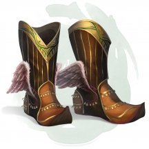
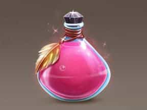
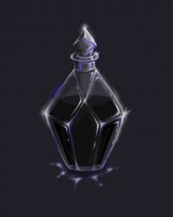
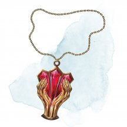
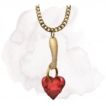
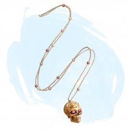
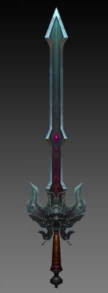
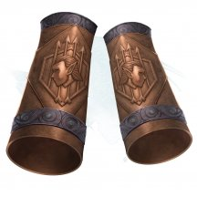
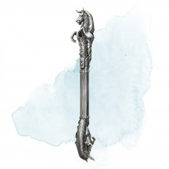

- Оружие (любые боеприпасы), необычное
- Рекомендованная стоимость: 101-500 зм
Ваши дальнобойные атаки оружием, совершённые с использованием этого боеприпаса, игнорируют укрытие на половину и укрытие на три четверти. Кроме того, ваши дальнобойные атаки оружием не получают помеху на броски атаки максимальной дистанции, совершённые с использованием этого боеприпаса.
Магические предметы
Официальные материалы от Wizards of the Coast и от издательств, поддерживаемых этой компанией.

- Чудесный предмет, необычный (требуется настройка)
- Рекомендованная стоимость: 101-500 зм
Пока вы носите эти сапоги, вы обладаете скоростью полёта, равной вашей скорости ходьбы. С помощью сапогов вы можете лететь до 4 часов, за раз или по частям, но каждое использование считается как минимум за 1 минуту. Если вы летите, когда 4 часа заканчиваются, вы спускаетесь со скоростью 30 футов в раунд, пока не приземлитесь.
Сапоги восстанавливают 2 часа полёта за каждые 12 часов, пока не используются.
- Чудесный предмет, необычный
- Рекомендованная стоимость: 101-500 зм
- Когда этот цветастый стеклянный кубок наполнен водой, действием вы можете выплеснуть содержимое в любом направлении. Жидкость превращается в слепящий поток яркого разноцветного света. Бросьте 6к10; суммарный результат определяет число хитов, на которые распространится эффект. Существа в 15-футовом конусе, исходящем от вас, подвержены эффекту в порядке возрастания их текущих хитов (исключая существ, не способных видеть).
Каждое существо в конусе, начиная с существа с наименьшим числом текущих хитов, ослеплено до конца вашего следующего хода. Вычтите число хитов из общей суммы перед переходом к следующему; число хитов существа должно быть меньше или равно оставшемуся от суммы числа, иначе оно не будет ослеплено.
Как только вы использовали эту особенность предмета, оно не может быть вновь использовано до следующего рассвета.
- Доспех (Латы), необычный (требуется настройка)
- Рекомендованная стоимость: 101-500 зм
Этот блестящий комплект серебряных и золотых пластинчатых доспехов никогда не тускнеет.
Пока вы носите эти доспехи, вы можете использовать бонусное действие, чтобы призвать на помощь дух воина. Телесная форма духа проявляется в свободном пространстве по вашему выбору в пределах 30 футов от вас и использует блок характеристик рыцаря [knight]. Дух исчезает, когда его хиты опускаются до 0 или через 1 минуту, в зависимости от того, что наступит раньше.
Дух — союзник вас и ваших спутников. В бою дух имеет такую же инициативу, как и вы, и ходит сразу после вас. Дух подчиняется вашим командам (от вас не требуется никаких действий); если вы не отдаете никаких команд, дух выполняет действие «Уклонение» и использует свое движение, чтобы избежать опасности.
После того, как это бонусное действие будет использовано, его нельзя будет использовать снова до следующего рассвета.

- Зелье, необычное
- Рекомендованная стоимость: 51-250 зм
Вы становитесь на 1 час очарованы первым же существом, которое вы увидите в течение 10 минут после того, как выпили это зелье. Если существо принадлежит к биологическому виду и полу, которые привлекают вас в обычных условиях, то вы воспринимаете его как свою истинную любовь, пока очарованы им. Жидкость представляет собой розовую, шипучую жидкость, с пузырьками в виде сердец.
- Чудесный предмет, необычный (требуется настройка бардом)
- Рекомендованная стоимость: 101-500 зм
Существо, пытающееся играть на инструменте, не будучи настроенным на него, должно преуспеть в спасброске Мудрости Сл 15, иначе получит урон психической энергией 2к4.
Вы можете действием сыграть на инструменте и наложить одно из его заклинаний: дружба с животными [animal friendship], защита от энергии [protection from energy] (только от огня), защита от яда [protection from poison], защита от зла и добра [protection from evil and good], левитация [levitate], невидимость [invisibility], полёт [fly]. После того как инструмент использован для наложения заклинания, он не может повторно накладывать это заклинание до следующего рассвета. Заклинания используют вашу базовую характеристику и Сл спасбросков от ваших заклинаний.
Вы можете играть на инструменте при наложении заклинания, которое делает цели очарованными при провале спасброска, тем самым давая целям помеху на этот спасбросок. Этот эффект применяется только если заклинание имеет соматический или материальный компонент.
Варианты этого предмета: Арфа Анструт • Лютня Досс • Мандолина Канаит • Лира Кли • Арфа Оллава • Бандура Фоклучан • Цитра Мак-Фуирми

- Чудесный предмет, необычный
- Рекомендованная стоимость: 51-250 зм
Это стеклянная банка, три дюйма в диаметре, содержит 1к4 + 1 доз густой мази, которая слабо пахнет алоэ. Банка и её содержимое весят 0,5 фунта.
Действием можно проглотить или нанести на кожу одну дозу мази. Существо, которое делает так, восстанавливает 2к8 + 2 хита, перестаёт быть отравленным и излечивается от всех болезней.
- Чудесный предмет, необычный (требуется настройка)
- Рекомендованная стоимость: 101-500 зм
Мантия змиев представляет собой стильный предмет одежды, популярный среди богатых дворян и ушедших на покой убийц. Мантия украшена 1к4+3 стилизованными и ярко раскрашенными змеями.
Бонусным действием в свой ход вы можете превратить одну из змей на мантии в гигантскую ядовитую змею [giant poisonous snake]. Змея мгновенно выпадает из мантии, скользит на свободное место рядом с вами и действует во время вашей инициативы. Змея отличает дружественных существ от враждебных и атакует последних. Змея исчезает в безвредном облаке дыма спустя час, или если её хиты опустятся до 0, или если вы отмените эффект (действия на это не тратятся). Будучи снятой с мантии, змея уже не может вернуться назад. Когда все змеи с мантии покинут её, она становится обычной одеждой.

- Чудесный предмет, необычный
- Рекомендованная стоимость: 101-500 зм
Эта мантия покрыта множеством цветных заплат различных размеров и форм. Пока вы носите эту мантию, вы можете действием оторвать одну из заплаток, вследствие чего она превращается в тот предмет, который символизировала. В тот момент, когда будет оторвана последняя заплатка, мантия превращается в обычную одежду.
Мантия содержит по две штуки каждой из заплат, представленных ниже:
- Кинжал
- Направленный фонарь (заправленный и зажжённый)
- Стальное зеркальце
- 10-футовый шест
- Пеньковая верёвка (50 футов, собранная в бухту)
- Мешок
Кроме того, на мантии также есть 4к4 других заплат. Мастер может самостоятельно выбрать, что именно это за заплатки, или же определить их случайным образом.
к100 Заплатка 01-08 Сумка со 100 зм 09-15 Серебряный сундучок (1 фут в длину и 6 дюймов в ширину и высоту) стоимостью 500 зм 16-22 Железная дверь (до 10 футов в ширину и высоту, имеющая запор с одной стороны), которую вы можете установить в проём, до которого можете дотронуться. Дверь самостоятельно приспосабливается под нужный размер и навешивается на петли 23-30 10 драгоценных камней стоимостью 100 зм каждый 31-44 Деревянная лестница (24 фута длиной) 45-51 Ездовая лошадь с притороченными седельными сумками. 52-59 Яма (куб с длиной грани 10 футов, который вы можете разместить на полу в пределах 10 футов от себя) 60-68 4 зелья лечения 69-75 Шлюпка (12 футов в длину) 76-83 Свиток заклинания, содержащий заклинание 1–3 уровня 84-90 2 мастифа 91-96 Окно (4 на 2 фута и глубиной до 2 футов), устанавливаемое на вертикальную поверхность, до которой можете дотронуться. 97-00 Портативный таран
- Чудесный предмет, необычный (требуется настройка друидом или следопытом)
- Рекомендованная стоимость: 101-500 зм
Этот плащ меняет цвет и текстуру для смешения с окружающей вас местностью. Пока вы носите плащ, вы можете использовать его в качестве заклинательной фокусировки для ваших заклинаний друида и следопыта.
Пока вы находитесь в слабо заслонённой области, вы можете использовать действие Засада бонусным действием, даже если за вами непосредственно наблюдают.
- Чудесный предмет, необычный
- Рекомендованная стоимость: 101-500 зм
Эта деревянная маска изображает голову животного и имеет 3 заряда. При ношении маски вы можете потратить 1 заряд и использовать маску, чтобы действием наложить заклинание дружба с животными [animal friendship]. Маска восстанавливает все потраченные заряды на рассвете.

- Зелье, необычное
- Рекомендованная стоимость: 51-250 зм
Эта липкая чёрная мазь, хранящаяся в толстостенном и тяжёлом контейнере, очень текуча. Маслом можно обмазать одно существо Среднего или меньшего размера, вместе с одеждой и переносимым им снаряжением (на каждую категорию размера выше Среднего необходим один дополнительный пузырёк масла). Нанесение масла занимает 10 минут. Обмазанное существо получает на 8 часов эффект заклинания свобода перемещения [freedom of movement].
В качестве альтернативы, можно действием разлить масло по полу, покрыв площадь 10 × 10 футов. Эффект будет такой же, как от заклинания скольжение [grease] длительностью 8 часов.

- Чудесный предмет, необычный (требуется настройка)
- Рекомендованная стоимость: 101-500 зм
Пока вы носите этот медальон, ваше состояние стабилизируется каждый раз, когда вы находитесь в умирающем состоянии в начале своего хода. Кроме того, каждый раз, когда вы бросаете Кость хитов для восстановления своих хитов, вы удваиваете число хитов, восстанавливаемых этой Костью.

- Чудесный предмет, необычный
- Рекомендованная стоимость: 101-500 зм
Вы обладаете иммунитетом ко всем болезням, пока носите этот медальон. Если вы уже болеете, эффект болезни подавляются на время, пока вы носите этот медальон.

- Чудесный предмет, необычный (требуется настройка)
- Рекомендованная стоимость: 101-500 зм
У этого медальона есть 3 заряда. Пока вы его носите, вы можете действием потратить 1 заряд, чтобы наложить им заклинание обнаружение мыслей [detect thoughts] (Сл спасброска 13). Медальон ежедневно восстанавливает 1к3 заряда на рассвете.

- Оружие (метательное копьё), необычное
- Рекомендованная стоимость: 101-500 зм
Это метательное копьё — магическое оружие. Если вы метнёте его и произнесёте его командное слово, оно превратится в молнию, формируя линию шириной 5 футов и простирающуюся от вас до цели, находящейся в пределах 120 футов. Все существа в этой линии, исключая вас и цель, должны совершить спасбросок Ловкости Сл 13, получая 4к6 урона электричеством при провале или половину этого урона при успехе.
Молния снова становится копьём, когда достигает цели. Совершите дальнобойную атаку оружием по цели. При попадании цель получает урон от метательного копья плюс 4к6 урона электричеством.
Это свойство метательного копья нельзя использовать повторно до следующего рассвета. Однако оно всё равно может использоваться как магическое оружие.
- Чудесный предмет, необычный
- Рекомендованная стоимость: 101-500 зм
- Меха выполнены из коричневой кожи и твёрдой древесины, а сопло — из латуни. Действием вы можете накачать меха, отчего в течение 1 минуты из сопла вырывается линия сильного ветра 60 футов длиной и 10 футов шириной.
Существо, начинающее свой ход в области воздействия, должно преуспеть в спасброске Силы Сл 15, иначе будет оттолкнуто на 15 футов по направлению ветра. Существо, двигающееся в области воздействия по направлению к мехам, должно тратить 2 фута скорости за каждый фут передвижения.
Ветер развеивает газы и испарения, а также гасит свечи, факелы и другие сходные незащищённые источники пламени. Огонь в защищённых от ветра местах, таких как фонари, яростно трепещет и гаснет с 50% шансом.Пока эффект не окончен, в каждый свой ход вы можете бонусным действием менять направление, в которое направлено сопло мехов.
Как только вы использовали эту особенность предмета, она не может быть вновь использована до следующего рассвета.

- Оружие (любой меч), необычное (требуется настройка)
- Рекомендованная стоимость: 101-500 зм
Вы получаете бонус +1 к броскам атаки и урона этим магическим оружием.
Проклятье. Этот меч проклят и одержим мстительным духом. Настроившись на него, вы тоже становитесь проклятым. Пока вы прокляты, вы не желаете расставаться с этим мечом, и всегда держите его при себе. Пока вы настроены на это оружие, вы совершаете с помехой все броски атаки другим оружием.
Кроме того, пока меч находится у вас, вы должны совершать спасбросок Мудрости Сл 15 каждый раз, когда получаете урон в сражении. При провале вы должны атаковать существо, причинившее вам урон, пока хиты одного из вас не опустятся до 0, или пока вы не сможете дотянуться до существа, чтобы совершить по нему рукопашную атаку.
Вы можете избавиться от проклятья как обычно. В качестве альтернативы, накладывание изгнания на меч заставляет мстительный дух покинуть его. После этого меч становится обычным оружием +1 без особых свойств.
- Чудесный предмет, необычный (требуется настройка Волшебником, Колдуном или Чародеем)
- Рекомендованная стоимость: 101-500 зм
Новаторство — опасное занятие, по крайней мере, в том смысле, в каком им занимаются маги из Лиги Иззетов. В качестве защиты от рисков провала эксперимента они разработали устройство, помогающее направлять и контролировать их магию. Это устройство представляет собой набор кожаных ремней, гибких трубок, стеклянных цилиндров и пластин, наручей и приспособлений, изготовленных из магического сплава металлов под названием миззий, собранных в единый комплект. Предмет весит 8 фунтов.
Пока вы носите миззиевый аппарат, вы можете использовать его как заклинательную фокусировку. Кроме того, вы можете попытаться наложить заклинание, которое вы не знаете или не подготовили. Заклинание, которое вы выбираете, должно быть в списке заклинаний вашего класса и уровня, для которого у вас есть ячейка заклинаний, и вы должны иметь материальные компоненты для этого заклинания.
Вы расходуете ячейку заклинаний, чтобы наложить заклинание как обычно, но прежде чем сделать это, вы должны совершить проверку Интеллекта (Магия). Сл составляет 10 + удвоенный уровень ячейки заклинаний, которую вы расходуете на накладывание заклинания.
При успешной проверке вы накладываете заклинание как обычно, используя свою Сл заклинаний и базовую характеристику. При провале вы накладываете заклинание, отличное от того, которое намеревались. Случайным образом определите заклинание, которое вы накладываете, совершите бросок по таблицу уровня ячейки заклинаний, которую вы израсходовали. Если ячейка 6-го уровня и выше, совершите бросок по таблице заклинаний 5-го уровня.
Если вы попытаетесь наложить заговор, которого не знаете, Сл для проверки Интеллекта (Магия) равна 10, и при провале никакой эффект не активируется.
Заклинания 1-го уровня
к6 Заклинания 1 Огненные ладони [burning hands] 2 Снаряд хаоса [chaos bolt] 3 Сверкающие брызги [color spray] 4 Огонь фей [faerie fire] 5 Туманное облако [fog cloud] 6 Волна грома [thunderwave] Заклинания 2-го уровня
к6 Заклинания 1 Размытый образ [blur] 2 Порыв ветра [gust of wind] 3 Раскаленный металл [heat metal] 4 Мельфова кислотная стрела [Melf’s acid arrow] 5 Палящий луч [scorching ray] 6 Дребезги [shatter] Заклинания 3-го уровня
к6 Заклинания 1 Ужас [fear] 2 Притворная смерть [feign death] 3 Огненный шар [fireball] 4 Газообразная форма [gaseous form] 5 Метель [sleet storm] 6 Зловонное облако [stinking cloud] Заклинания 4-го уровня
к4 Заклинания 1 Смятение [confusion] 2 Призыв малых элементалей [conjure minor elementals] 3 Эвардовы чёрные щупальца [Evard’s black tentackles] 4 Град [ice storm] Заклинания 5-го уровня
к4 Заклинания 1 Оживление вещей [animate objects] 2 Облако смерти [cloudkill] 3 Конус холода [cone of cold] 4 Небесный огонь [flame strike]
- Доспех (кольчужная рубаха), необычный
- Рекомендованная стоимость: 101-500 зм
Мифрил это лёгкий и гибкий металл. Сделанная из него кольчужная рубаха может носиться под обычной одеждой. Если в обычном исполнении доспех накладывает помеху на проверки Ловкости (Скрытность) или имеет требования к Силе, то в версии из мифрила он не обладает этими недостатками.
Пока вы носите этот доспех, вы обладаете тёмным зрением на 60 футов.

- Доспех (средний или тяжелый, кроме шкурного), необычный
- Рекомендованная стоимость: 101-500 зм
Мифрил это лёгкий и гибкий металл. Сделанная из мифрила кольчужная рубаха или кираса может носиться под обычной одеждой. Если в обычном исполнении доспех накладывает помеху на проверки Ловкости (Скрытность) или имеет требования к Силе, то в версии из мифрила он не обладает этими недостатками.
- Чудесный предмет, необычный
- Рекомендованная стоимость: 101-500 зм
Отчеканенные из адского железа, монеты душ около 5 дюймов в ширину и около дюйма толщиной. Каждая монета весит 1/3 фунта, и на ней начертаны инфернальные письмена и заклинание, которое магически связывает одну душу с монетой. Поскольку каждая монета души имеет уникальную душу, заключенную в ней, у каждой из них есть история. Одна могла быть заключена из-за невыполнения сделки, в то время как другая могла стать жертвой проклятия ночной карги [night hag].
Владея монетами душ. Владеть монетой души — значит чувствовать, что душа находящаяся внутри неё охвачена яростью или полна отчаяния. Злое существо может нести столько монет душ, сколько пожелает (до своего максимального веса). Не злое существо может нести количество монет душ, равное или меньше, его модификатора Телосложения, без штрафа. Не злое существо, несущее количество монет душ больше, чем его модификатор Телосложения, получает помеху на броски атаки, проверки характеристик и спасброски.
Использование монеты души. Монета души имеет 3 заряда. Действием, существо, владеющее монетой, может израсходовать 1 заряд монеты души и использовать его для совершения одного из следующих действий:
- Высасывание жизни. Вы выкачиваете часть сущности души и получаете 1к10 временных хитов.
- Вопрос. Вы телепатически задаете душе вопрос и получаете краткий телепатический ответ, который можете понять. Душа знает только то, что она знала при жизни, и она обязана отвечать вам правдиво и в меру своих возможностей. Ответ не может быть больше предложения или двух, а так же может быть загадочным.
Освобождение души. Наложение заклинания, снимающего проклятие с монеты души, освобождает душу, заключенную в ней, как и расходование всех зарядов монеты. Сама монета ржавеет и разрушается, как только душа освобождается. Освобожденная душа отправляется в царство бога, которому она служила, или на внешний план, наиболее тесно связанный с её мировоззрением (по выбору Мастера). Души законно злых существ, освобожденные из монет душ, обычно выходят из Реки Стикс в виде лемуров [lemure].
Душу также можно освободить, уничтожив монету, которая её содержит. Монета души имеет 19 КД, 1 хит за каждый оставшийся заряд и иммунитет ко всему урону, кроме того, который наносится адским орудием [hellfire engine] или адскими военными машинами.
Освобождение души из монеты души считается добрым поступком, даже если душа принадлежит злому существу.
Адская валюта. Монеты душ являются валютой в Девяти Преисподних и высоко ценятся дьяволами. Монеты используются в адской иерархии для обмена на расположение, подкупа тех, кто не согласен, и вознаграждения верующих за оказанные услуги.
Монеты душ создаются Маммоном и его великими дьяволами на Минауросе, третьем слое Девяти Преисподних, в необъятной камере, где захваченные души злых смертных заключаются в монеты. Эти монеты затем распределяются по Девяти Преисподним, чтобы использоваться для покупки товаров и услуг, адских сделок, темных дел и взяток.

- Чудесный предмет, необычный (требуется настройка)
- Рекомендованная стоимость: 101-500 зм
Пока вы носите эти наручи, вы получаете владение длинным луком и коротким луком, а также бонус +2 к броскам урона дальнобойными атаками этим оружием.

- Жезл, необычный
- Рекомендованная стоимость: 101-500 зм
У этого прямого железного жезла есть кнопка на одном торце. Вы можете действием нажать эту кнопку, после чего жезл становится магическим образом зафиксирован в текущей точке пространства. Пока вы или другое существо не нажмёте эту кнопку ещё раз, жезл не может быть сдвинут с места, игнорируя при этом даже гравитацию. Жезл может выдержать до 8000 фунтов веса (3,6 тонны). Больший вес деактивирует жезл, и тогда тот падает. Существо может действием совершить проверку Силы Сл 30, сдвигая зафиксированный жезл на 10 футов в случае успеха.
- Чудесный предмет, необычный
- Рекомендованная стоимость: 101-500 зм
- Пока вы носите этот браслет, вы можете стоять на любой жидкости и ходить по ней, как будто это твёрдая поверхность.